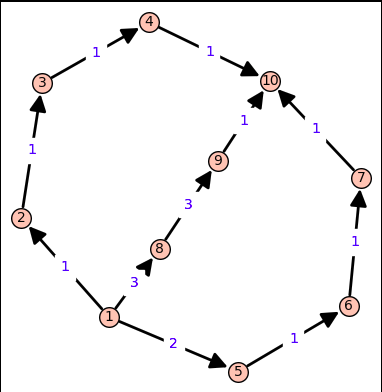

-
Google Summer of Code 2019 Under SageMath
-
OVERVIEW
My journey of GSOC with SageMath has been a fun-filled and very productive as I spent my summer in implementing and improving various algorithms in the graph module of SageMath under the guidance of Dr. David Coudert as my mentor under Google Summer of Code 2019 program.
The project spanning over a period of 3 months, consisted in improving the implementation of existing algorithms and in implementing new algorithms for enumeration of k shortest simple paths between a source and a destination vertex in a graph. As a first step certain methods were improved and cleaned which served as dependencies for implementing new algorithms for k shortest paths. Then at first Yen's algorithm[1] for k shortest simple paths in a graph was implemented followed by improvements such as Lawler's modification[6]. Feng's algorithm[2] which finds k shortest paths in a directed graph efficiently was implemented as a second step. After implementing both of these methods they were tested for corner cases and other bugs. Then a separate module path_enumeration.pyx was made in the graph module of SageMath. All the methods related to shortest paths between source and destination vertices were moved in this module. Then the last step was Cythonizing the methods present in this module for speed improvements. - Getting started
-
In the initial weeks to get hands on experience on SageMath Development, I started reading about how things work in SageMath using the developer's guide . As I went deeper I started to work on the following tickets as described below.
#24101 I finalized this ticket which was opened since two years. I helped in implementing the Katz Centrality and Katz Matrix methods in the graph module to measure relative influence of a node in a graph.
#24094 I finalized this ticket which was opened since two years. I helped in implementing the methods such as Effective Resistance, Resistance Matrix and Least Resistance Pairs. These methods help to find the effective resistance between a pair of nodes in a graph network by treating all edges as resistance of 1 ohm.
#9707 I finalized this ticket which was opened since nine years, adding a signless option to Laplacian Matrix which is popular now a days to measure signless laplacian.
#27464 I created this ticket to fix a bug and also use the cython priority_queue instead of python heap to make bidirectional_dijkstra method faster and bug free.
#27491 I created this ticket to deprecate the parameter copy in networkx_graph method and also to remove some deprecated pieces of code.
#27507 I created this ticket to fix some documentation errors in generic_graph.py module.
#24089 I finalized this ticket which was opened since two years. I helped in implementing the methods such as max_common_neighbors and common_neighbors_matrix to find the number of common neighbors between 2 given nodes and find which nodes have the most common neighbors.
#27496 I proposed and implemented the addition of parameter weight_function for constructing networkx graphs from sage graphs.
#27501 I created this ticket to add parameters in all_paths method to make use of the multiedges present and return edges with or without labels. Parameters added were
• use_multiedges – to take multiedges into account for enumerating the paths between source and the destination vertices.
• report_edges – to use edges for enumerating the paths instead of vertices as used before.
• label – to use labels while reporting the edges.
#27504 Similar to #27501 I added the option to make use of multiedges and report edges instead of vertices for paths in all_simple_paths method of digraph module.
#27557 I created this ticket to add labels option to the spanning_trees method to include labels while reporting edges in the corresponding spanning trees.
#27502 I created this ticket to report errors while using pagerank algorithm of Igraph package.
#27480 I created this ticket to implement the pagerank function for the sage module and make use of underlying networkx, numpy and scipy and igraph pagerank functionality.
#27538 I created this ticket to report the defect in cycle_basis method which gives wrong results in case of multiedges.
#27570 I created this ticket to implement a method for finding a minimal weight cycle basis in an undirected weighted graph which has applications in signals and circuit theory.
#27600 I created this ticket to add parameters by_weight in min_spanning_tree method and fix some errors in the method which was present.
- Phase 1
-
Implementing the Yen's algorithm[1] for finding k shortest simple paths between a source and destination node in a graph.
Related Tickets:
#27859 Implementing the Yen's algorithm and its improved versions
-
Yen’s algorithm[1] computes source to destination k-shortest simple paths for a graph with non-negative edge cost. It can be split into 2 parts, first part determining the first shortest path and the second part determining all other k shortest paths. It employs any shortest path algorithm (for eg. Dijkstra’s algorithm) to find the best path and then proceeds to find k - 1 deviations of the best path. The Time Complexity of Yen’s algorithm is dependent on the shortest path algorithm used in the computation of the spur paths. If Dijkstra’s algorithm is used which has a worst case time complexity of O(N^2), the time complexity of Yen’s algorithm becomes O(kN3). Here N is the number of vertices in the graph.
function YenKSP(Graph, source, sink, K):
// Determine the shortest path from the source to the sink.
A[0] = Dijkstra(Graph, source, sink);
// Initialize the set to store the potential kth shortest path.
B = [];
for k from 1 to K:
// The spur node ranges from the first node to the next to last node in the previous k-shortest path.
for i from 0 to size(A[k − 1]) − 2:
// Spur node is retrieved from the previous k-shortest path, k − 1.
spurNode = A[k-1].node(i);
// The sequence of nodes from the source to the spur node of the previous k-shortest path.
rootPath = A[k-1].nodes(0, i);
for each path p in A:
if rootPath == p.nodes(0, i):
// Remove the links that are part of the previous shortest paths which share the same root path.
remove p.edge(i, i + 1) from Graph;
for each node rootPathNode in rootPath except spurNode:
remove rootPathNode from Graph;
// Calculate the spur path from the spur node to the sink.
spurPath = Dijkstra(Graph, spurNode, sink);
// Entire path is made up of the root path and spur path.
totalPath = rootPath + spurPath;
// Add the potential k-shortest path to the heap.
B.append(totalPath);
// Add back the edges and nodes that were removed from the graph.
restore edges to Graph;
restore nodes in rootPath to Graph;
if B is empty:
// This handles the case of there being no spur paths, or no spur paths left.
// This could happen if the spur paths have already been exhausted (added to A),
// or there are no spur paths at all - such as when both the source and sink vertices
// lie along a "dead end".
break;
// Sort the potential k-shortest paths by cost.
B.sort();
// Add the lowest cost path becomes the k-shortest path.
A[k] = B[0];
B.pop();
return A;
- Phase 2
-
Gang Feng[2] proposed an algorithm similar to Yen’s algorithm but using a node classification technique to reduce the average running time of Yen’s algorithm. When generating a candidate path deviating from the current shortest path at a certain node, each node in the graph is assigned one of the 3 colours namely red, green and yellow. A node on the prefix is assigned a red color, a node that can reach t (the destination node) through a shortest path without visiting a red node is assigned a green color, and all other nodes are assigned a yellow color. When searching for the suffix of a candidate path, all green nodes can be bypassed, and Dijkstra’s algorithm need to be applied to find an all-yellow-node subpath. Since on average the number of yellow nodes is much smaller than N this algorithm has a much lower average-case running time although the worst case time complexity remains the same.
Procedure. FindCandidates(p)
Input:
p: the shortest path removed from Q.
All nodes in G are green.
Result:
All candidate paths deviating from p are added to Q.
if (p = p1) then
u:= s
else
u := dev(p)
Call FindEdgesToRemove(p) to find Ed(p)
Remove all edges in Ed(p)
Set all nodes in subp(s, u) to red
for each node v ∈ subp(s, u)
Call GetUpStreamNodes(v) to find Yv
Set all nodes in Yv to yellow
Let Y = UvYv
where v∈subp(s,u)
Call FindExpressEdges(Y ∪ {u})
Set t to yellow
while (TRUE) /* infinite loop */
Remove edge (u, nextp(u))
Find a shortest u-t path r (yellow-node only)
Add the candidate path subp(s, u) ⟗ r to Q
if (nextp(u) = t)
exit the while loop
u := nextp(u)/* advance to next node */
Set u to red
Call GetUpStreamNodes(u) to find Yu
Set all nodes in Yu to yellow
for each node v ∈ Yu ∪ {u}
if |Xv| > 0 then
recover all express edges in Xv
Call FindExpressEdges(Yu ∪ {u})
Recover all express edges
Recover all removed edges
Set all yellow and red nodes back to green
- Phase 3
-
Cythonization of various methods present in the path_enumeration module
Cython is a programming language that aims to be a superset of the Python programming language, designed to give C-like performance with code that is written mostly in Python with optional additional C-inspired syntax.
* Cythonization in this blog refers to converting the Python code into Cython language using Cython variable declarations and Cython data structure.
Related Tickets:
#28221 minor improvement in bidirectional_dijkstra
#28335 Cythonize Yen_k_shortest_simple_paths and feng_k_shortest_simple_paths
#28220 Cythonize all_simple_paths, all_paths_iterator and _all_paths_iterator
-
The methods such as all_simple_paths, all_paths_iterator, _all_paths_iterator, feng_k_shortest_simple_paths, yen_k_shortest_simple_paths were cythonized using Cython variable declaration and Cython data structures.
Usage of k shortest paths between a source and destination vertex in SageMath looks like:
sage: g = DiGraph([(1, 2, 1), (2, 3, 1), (3, 4, 1), (4, 10, 1), (1, 5, 2), (5, 6, 1), (6, 7, 1), (7, 10, 1), (1, 8, 3), (8, 9, 3), (9, 10, 1)])
sage: g.show()

sage: list(g.shortest_simple_paths(1, 10, by_weight = True, algorithm = "Yen", report_weight = True))
[(4, [1, 2, 3, 4, 10]), (5, [1, 5, 6, 7, 10]), (7, [1, 8, 9, 10])]
sage: list(g.shortest_simple_paths(1, 10, by_weight = True, algorithm = "Feng", report_weight = True))
[(4, [1, 2, 3, 4, 10]), (5, [1, 5, 6, 7, 10]), (7, [1, 8, 9, 10])]
sage: list(g.shortest_simple_paths(1, 10, by_weight = True, algorithm = "Yen", report_weight = True, report_edges = True))
[(4, [(1, 2), (2, 3), (3, 4), (4, 10)]),
(5, [(1, 5), (5, 6), (6, 7), (7, 10)]),
(7, [(1, 8), (8, 9), (9, 10)])]
-
Acknowledgements :
-
First and foremost, I would like to thank my mentor, Dr. David Coudert for his dedicated guidance and encouragement throughout the duration of GSoC and also prior to it, when I was learning SageMath development. I have become a lot better in writing codes in Python. Working with SageMath over the summer was a great learning experience and has enhanced my passion for open source. My Mentor was very helpful and insightful and helped me to optimize the various algorithms. I certainly want to contribute more to open source libraries and I plan on continuing to work with SageMath.
And most importantly, I express my gratitude to the people behind Google Summer of Code. I had a very enjoyable experience working in GSoC 2019. -
References :
-
1. Yen, J. Y (1971), "Finding the k-Shortest Loopless Paths in a Network", Management Science, 17 (11): 712–716, doi:10.1287/mnsc.17.11.712
2. Gang Feng Finding k shortest simple paths in directed graphs: A node classification algorithm , 2014.
3. Takuya Akiba, Takanori Hayashi, Nozomi Nori, Yoichi Iwata and Yuichi Yoshida Efficient Top-k Shortest-Path Distance Queries on Large Networks by Pruned Landmark Labeling in Proceedings of the Twenty-Ninth AAAI Conference on Artificial Intelligence, 2015.
4. David Eppstein, Finding the k Shortest Paths, SIAM Journal on Computing, v.28 n.2, p.652-673, April 1999.
5. Cohen, E.; Halperin, E.; Kaplan, H.; and Zwick, U. 2002. Reachability and distance queries via 2-hop labels. In SODA, 937–946.
6. Lawler, EL (1972). "A procedure for computing the k best solutions to discrete optimization problems and its application to the shortest path problem". Management Science, Theory Series. 18: 401–405. doi:10.1287/mnsc.18.7.401.